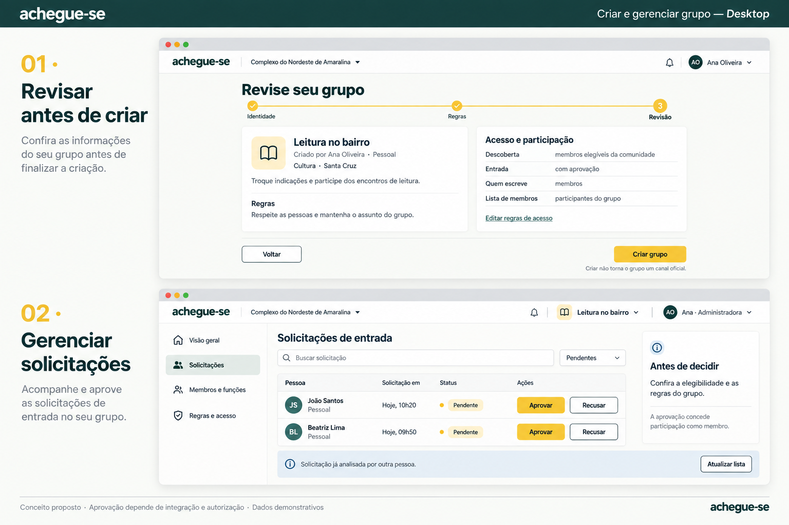

← Catálogo
Grupos da comunidade
Funcionamento e correções
·
Revisão
·
Prompts
grupos-mobile
grupos-desktop
Criar e gerenciar grupo
Funcionamento complementar
criar-gerenciar-grupo-mobile

criar-gerenciar-grupo-desktop